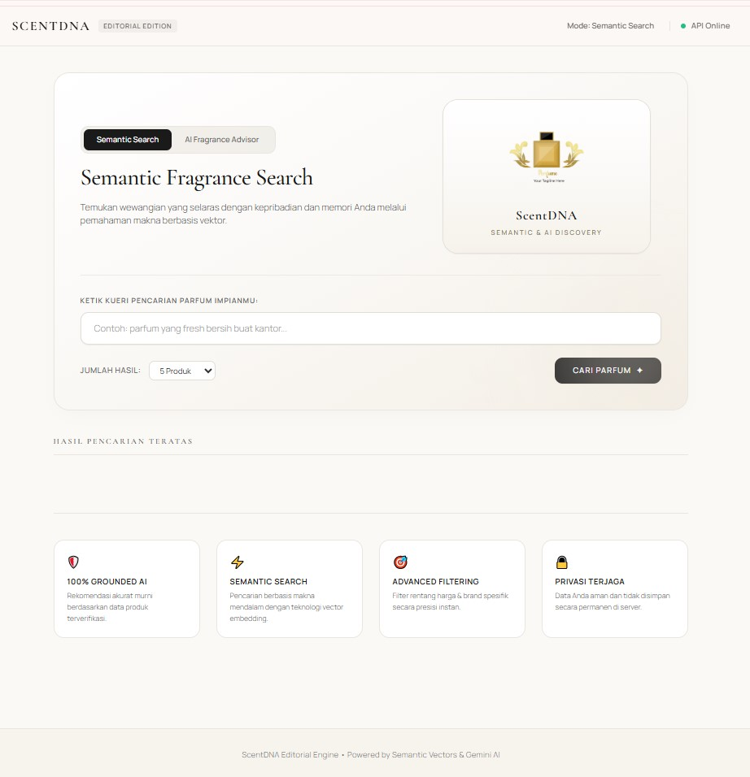
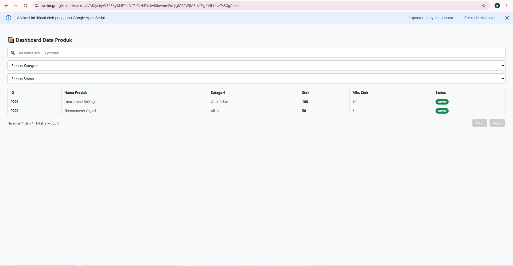
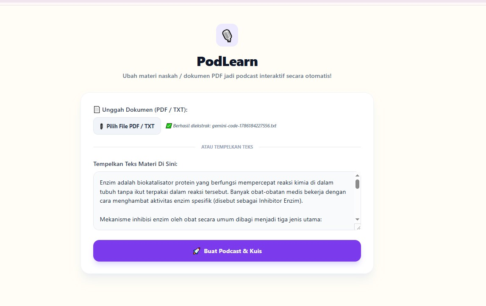

Available for Freelance Project
Halo, Saya Muhammad Ulul Albab
Seorang pengembang aplikasi web, mobile kustom, dan AI chatbot interaktif yang berfokus pada performa bersih dan solusi digital modern.

Seorang pengembang aplikasi web, mobile kustom, dan AI chatbot interaktif yang berfokus pada performa bersih dan solusi digital modern.
Saya memiliki ketertarikan mendalam dalam dunia pemrograman, khususnya pembuatan web aplikasi fungsional, aplikasi mobile lintas platform dengan React Native, sistem dashboard manajemen kustom, hingga integrasi bot berbasis AI yang aktif 24/7 di cloud. Terbiasa merancang logika program yang rapi dan terstruktur untuk menyelesaikan masalah secara efisien.
Klik pada kartu proyek di bawah untuk melihat detail lengkap dan tautan uji coba aplikasi secara langsung.

Mesin rekomendasi & semantic search wewangian ter-containerize (Docker) berbasis Vector Embeddings dan RAG Gemini AI dengan optimasi alokasi RAM.
Aplikasi mobile interaktif khusus pasangan LDR dengan fitur pembagian suasana hati real-time, pelukan virtual, dan sistem Push Notification otomatis via FCM V1.

Sistem manajemen klinis fungsional dengan fitur pencatatan data dan kalkulator parameter terstruktur.

Sistem manajemen inventaris serverless skala produksi dengan dashboard real-time, RBAC, dan proteksi concurrency.

Generator podcast audio interaktif 2 pembicara dari dokumen PDF/materi teks lengkap dengan 10 kuis evaluasi otomatis.
Bot Telegram cerdas berbasis Llama-3.3 70B yang aktif di cloud 24/7, siap merespons percakapan multibahasa secara instan.
Aplikasi penjelajah dan manajemen domain web berbasis Laravel untuk riset ketersediaan, status, serta pengelolaan database domain.
Mari diskusikan kebutuhan proyek atau pembuatan aplikasi custom Anda bersama saya.